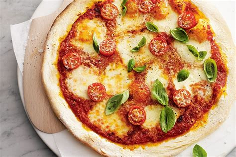

Pizza margarita casera
Tiempo:1 hora
Dificultad:Media
Ingredientes
- 500g de masa de pizza
- 200g de salsa de tomate
- 300g de queso mozzarella
- Hojas de albahaca fresca
- Aceite de oliva
Pasos
- Extender la masa de pizza en una bandeja para hornear.
- Esparcir la salsa de tomate y cubrir con queso mozzarella.
- Hornear a 200°C hasta que el queso esté derretido y dorado.
- Decorar con hojas de albahaca fresca y un chorrito de aceite de oliva antes de servir.